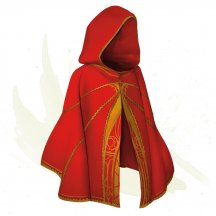
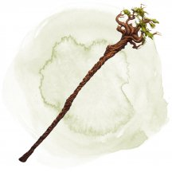
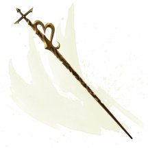
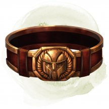

- Чудесный предмет, редкий
- Рекомендованная стоимость: 501-5 000 зм
Этот плащ слабо пахнет серой. Пока вы его носите, вы можете действием наложить заклинание переносящая дверь [dimension door]. Это свойство плаща нельзя использовать повторно до следующего рассвета.
Когда вы исчезаете, вы оставляете после себя облачко дыма, и в пункте назначения появляетесь тоже в клубах дыма. Дым слабо заслоняет покинутое и новое пространство и исчезает в конце вашего следующего хода. Лёгкий или более сильный ветер рассеивает этот дым.
Магические предметы
Официальные материалы от Wizards of the Coast и от издательств, поддерживаемых этой компанией.
- Оружие (кнут), редкое
- Рекомендованная стоимость: 501-5 000 зм
На рукояти этого кнута из темной кожи нанесена руна «Огонь», а вокруг хвоста кнута танцуют тлеющие угли.
Вы получаете бонус +1 к броскам атаки и урона этим оружием, а при попадании хлыст причиняет дополнительный 1к6 урона огнём. Когда вы совершаете критическое попадание атакой с использованием этого хлыста, цель также становится опутанной до начала вашего следующего хода, поскольку вокруг цели хлещут огненные полосы.
Пробуждение руны. Когда вы совершаете атаку кнутом и попадаете, вы можете реакцией пробудить руну кнута. Это увеличивает дополнительный урон огнём, наносимый кнутом, до 2к6.
После того, как руна была пробуждена, она не может быть пробуждена снова до следующего рассвета.
- Оружие (кнут), редкое (требуется настройка свежевателем разума)
- Рекомендованная стоимость: 501-5 000 зм
В руках любого кроме свежевателя разума [mind flayer] плеть разума работает как обычный кнут. В руках иллитида это магическое оружие сдирает с существа волю к жизни и плоть, нанося 2к4 дополнительного урона психической энергией при попадании.
Любое существо, которое получило урон психической энергией от плети разума должно успешно совершить спасбросок Мудрости Сл 15 или получить помеху на спасброски Интеллекта, Мудрости или Харизмы на 1 минуту. Существо может повторить спасбросок в конце каждого своего хода, и прекратить эффект при успехе.

- Чудесный предмет, редкий
- Рекомендованная стоимость: 501-5 000 зм
Эти железные подковы изготавливаются комплектом по четыре штуки. Если все четыре прикрепить к копытам лошади или подобного существа, они увеличивают скорость ходьбы этого существа на 30 футов.
- Посох, редкий (требуется настройка)
- Рекомендованная стоимость: 501-5 000 зм
Созданный из ветви древа Галтиас (см. раздел «Заразы» в «Бестиарии»), посох Галтиас – это пористый отрез чёрного дерева. Его зло заставляет зверей явно чувствовать себя некомфортно в пределах 30 футов от него. Посох имеет 10 зарядов и восполняет 1к6+4 потраченных зарядов на закате каждого дня.
Если посох будет сломан или сожжён до пепла, древесина испускает ужасающий, нечеловеческий крик, который слышно на 300 футов. Все заразы [blights], которые услышат этот крик, немедленно чахнут и погибают.
Удар вампира. Посох может быть использован как волшебный боевой посох. При попадании он наносит урон как обычный посох, а вы можете потратить 1 заряд, чтобы восполнить количество хитов, равное урону, нанесённому этим оружием. Каждый раз, когда тратится заряд, посох истекает кроваво-красной слизью и вы должны преуспеть в спасброске Мудрости Сл 12 или стать подверженным кратковременному безумию (см. «Безумие» в главе 8 «Руководства Мастера»).
Гибель для зараз. Пока вы настроены на посох, заразы [blights] и другие злые существа с типом «растение» не воспринимают вас враждебно, пока вы не причиняете им вреда.
- Посох, редкий (требуется настройка)
- Рекомендованная стоимость: 501-5 000 зм
Этот тонкий полый стеклянный посох прочен, будто сделан из дуба. Он весит 3 фунта. Вы должны быть настроены на посох, чтобы получить все его преимущества и накладывать заключённые в посохе заклинания.
Пока вы держите этот посох, вы получаете бонус +1 к Классу Доспеха.
У посоха есть 10 зарядов, которые расходуются на применение заключённых в нем заклинаний. Когда посох удерживается в руке, вы можете действием наложить одно из следующих заклинаний при условии, что оно есть в списке заклинаний вашего класса: доспехи мага [mage armor] (1 заряд) или щит [shield] (2 заряда). Для накладывания заклинаний не требуется никаких компонентов.
Посох восстанавливает 1к6 + 4 израсходованных зарядов каждый день на рассвете. Если вы израсходовали последний заряд, бросьте к20. Если выпадет 1, посох будет уничтожен и разобьётся.
- Посох, редкий (требуется настройка бардом, чародеем, колдуном или волшебником)
- Рекомендованная стоимость: 501-5 000 зм
Этот тонкий полый посох сделан из стекла, но прочен, как дуб. Он весит 3 фунта. Пока вы держите посох, вы получаете бонус +1 к вашему Классу Доспеха.
Заклинания. Посох имеет 10 зарядов. Удерживая его, вы можете потратить необходимое количество зарядов для накладывания одного из следующих заклинаний посоха: доспехи мага [mage armor] (1 заряд) или щит [shield] (2 заряда).
Посох восстанавливает 1к6 + 4 израсходованных заряда ежедневно на рассвете. Если вы потратите последний заряд посоха, бросьте к20. При выпадении «1» посох разбивается и уничтожается.

- Посох, редкий (требуется настройка друидом, жрецом или колдуном)
- Рекомендованная стоимость: 501-5 000 зм
У этого посоха 3 заряда, и он ежедневно восстанавливает 1к3 заряда на рассвете.
Этот посох можно использовать как магический боевой посох. При попадании он причиняет урон как обычный боевой посох, и вы можете потратить 1 заряд, чтобы причинить цели дополнительные 2к10 урона некротической энергией. Кроме того, цель должна преуспеть в спасброске Телосложения Сл 15, иначе она в течение 1 часа будет совершать с помехой проверки характеристик и спасброски, использующие Силу или Телосложение.
- Посох, редкий (требуется настройка)
- Рекомендованная стоимость: 501-5 000 зм
На этом корявом деревянном посохе вырезана руна «Холм». Посох волшебным образом изменяет свои размеры, чтобы соответствовать росту любого существа, которое на него настраивается.
Посох можно использовать как магический боевой посох, который дает бонус +1 к броскам атаки и урона, сделанным с его помощью. В первый раз, когда вы попадаете посохом в какое-либо существо в свой ход, это существо должно преуспеть в спасброске Силы Сл 12, иначе оно будет опутано призрачными лозами до начала вашего следующего хода.
Пробуждение руны. Действием вы можете пробудить руну посоха, чтобы наложить с его помощью удержание личности [hold person] (Сл спасброска 12) или разговор с растениями [speak with plants]. Когда вы накладываете заклинание удержание личности [hold person] с помощью посоха, цель оплетается призрачными лозами.
Как только руна была пробуждена для накладывания любого из этих заклинаний, она не может быть пробуждена снова до следующего рассвета.
- Посох, редкий (требуется настройка заклинателем)
- Рекомендованная стоимость: 501-5 000 зм
Этот серо-лазурный посох увенчан маленьким драконьим когтем, вырезанным из слоновой кости. Держа этот посох, вы получаете бонус +1 к броскам атаки заклинаниями. Всякий раз, когда вы совершаете критический удар с помощью атаки заклинанием, цель дополнительно получает 3к6 урона излучением.

- Посох, редкий (требуется настройка друидом)
- Рекомендованная стоимость: 501-5 000 зм
Этот посох можно использовать как магический боевой посох, предоставляющий бонус +2 к броскам атаки и урона им. Держа его, вы получаете бонус +2 к броскам атаки заклинаниями.
У посоха есть 10 зарядов для описанных ниже свойств. Он ежедневно восстанавливает 1к6 + 4 заряда на рассвете. Если вы истратили последний заряд, бросьте к20. Если выпадет «1», посох теряет все свои свойства и становится немагическим боевым посохом.
Заклинания. Вы можете действием потратить 1 или несколько зарядов посоха, чтобы наложить им одно из следующих заклинания, используя свою Сл спасброска от заклинания: дружба с животными [animal friendship] (1 заряд), дубовая кора [barkskin] (2 заряда), поиск животных или растений [locate animals or plants] (2 заряда), пробуждение разума [awaken] (5 зарядов), разговор с животными [speak with animals] (1 заряд), разговор с растениями [speak with plants] (3 заряда) или терновая стена [wall of thorns] (6 зарядов).
Вы также можете действием накладывать посохом заклинание бесследное передвижение [pass without trace], не тратя зарядов.
Древесный облик. Вы можете действием воткнуть посох в плодородную землю и потратить 1 заряд, чтобы превратить посох в здоровое дерево. Высота дерева 60 футов, диаметр ствола — 5 футов, а ветви на макушке раскинуты в радиусе 20 футов. Это дерево выглядит обычным, но излучает слабую магию школы Преобразования, если становится целью обнаружения магии [detect magic]. Прикоснувшись к дереву и произнеся действием командное слово, вы возвращаете посоху его обычный облик. Все находящиеся на дереве существа при этом падают.

- Посох, редкий (требуется настройка бардом, друидом или жрецом)
- Рекомендованная стоимость: 501-5 000 зм
У этого посоха есть 10 зарядов. Держа его, вы можете действием потратить часть зарядов и наложить им одно из следующих заклинаний, используя свою Сл спасброска от заклинания и базовую характеристику: лечение ран [cure wounds] (1 заряд за каждый уровень заклинания, максимум 4-й уровень), малое восстановление [lesser restoration] (2 заряда) или множественное лечение ран [mass cure wounds] (5 зарядов).
Посох ежедневно восстанавливает 1к6 + 4 заряда на рассвете. Если вы истратили последний заряд, бросьте к20. Если выпадет «1», посох исчезает во вспышке света, теряясь навсегда.

- Посох, редкий (требуется настройка бардом, волшебником, друидом, жрецом, колдуном или чародеем)
- Рекомендованная стоимость: 501-5 000 зм
Держа этот посох, вы можете действием потратить 1 из его 10 зарядов на то, чтобы наложить им очарование личности [charm person], понимание языков [comprehend languages] или приказ [command], используя свою Сл спасброска от заклинания. Этот посох также может использоваться как магический боевой посох.
Если вы держите этот посох и проваливаете спасбросок от заклинания школы Очарования, нацеленного только на вас, вы можете превратить проваленный спасбросок в успешный. Вы не можете использовать это свойство повторно до следующего рассвета. Если вы преуспели в спасброске от заклинания, нацеленного только на вас, вне зависимости от того, пришлось ли для этого прибегнуть к помощи посоха, вы можете реакцией потратить 1 заряд из посоха и отразить заклинание в того, кто его наложил, как если бы вы сами наложили это заклинание.
Посох ежедневно восстанавливает 1к8 + 2 заряда на рассвете. Если вы истратили последний заряд, бросьте к20. Если выпадет «1», посох становится немагическим боевым посохом.
- Посох, редкий (требуется настройка)
- Рекомендованная стоимость: 501-5 000 зм
Навершие этого чёрного адамантинового посоха выполнено в форме паука. Посох весит 6 фунтов. Вы должны быть настроены на посох, чтобы получить все его преимущества и накладывать заключённые в посохе заклинания.
Посох можно использовать как боевой посох. Он причиняет дополнительный урон ядом 1к6 при попадании, когда используется как оружие.
У посоха есть 10 зарядов, которые расходуются на применение заключённых в нём заклинаний. Когда посох находится в руке, вы можете действием наложить одно из следующих заклинаний, при условии, что оно есть списке заклинаний вашего класса: паук [spider climb] (1 заряд) или паутина [web] (2 заряда, Сл спасброска от заклинания 15). Для накладывания заклинаний не требуется никаких компонентов.
Посох восстанавливает 1к6 + 4 израсходованных зарядов каждый день на закате. Если вы израсходовали последний заряд, бросьте к20. Если выпадет 1, посох будет уничтожен и рассыпается в пыль.
- Посох, редкий (требуется настройка бардом, чародеем, колдуном или волшебником)
- Рекомендованная стоимость: 501-5 000 зм
Навершие этого магического посоха имеет форму паука. Он наносит дополнительный 1к6 урона ядом при попадании, когда используется для атаки оружием.
Заклинания. Посох имеет 10 зарядов. Удерживая его, вы можете потратить необходимое количество зарядов, чтобы наложить одно из следующих заклинаний посоха: паук [spider climb] (1 заряд) или паутина [web] (2 заряда; Сл спасброска заклинаний 15).
Посох восстанавливает 1к6 + 4 израсходованных заряда ежедневно в сумерках. Если вы потратите последний заряд посоха, бросьте к20. При результате «1» посох рассыпается в прах и уничтожается.
- Посох, редкий (требуется настройка)
- Рекомендованная стоимость: 501-5 000 зм
По всей своей длине красно-золотой посох оплетен украшением в виде змеи, на чешуе которой изображена текущая река. Пока вы держите его в руках, вы можете действием создать один из следующих эффектов. После того как посох создал эффект, он не может создать его снова до следующего рассвета.
Шаровая молния. Вы создаете Маленькую шаровую молнию в незанятом пространстве, которое вы можете видеть в пределах 60 футов от себя. Вы концентрируетесь на ней как при концентрации на заклинании. Бонусным действием вы можете перемещать шар на расстояние до 20 футов в любом направлении.
Когда прерывается ваша концентрация, а также если существо входит пространство шаровой молнии или начинает в ней свой ход, она взрывается сферой с радиусом 20-футов. Все существа в этой области должны совершить спасбросок Ловкости Сл 15. При провале цель получает полный урон электричеством, равный общему накопленному шаром урону. При успехе цель получает только половину этого урона. Базовый урон шара 6к6, и если в конце вашего хода шар не взорвался, его урон увеличивается на 2к6 до максимума 10к6.
Превращение в змею. Вы бросаете посох в незанятое пространство в радиусе 10 футов от вас, и он становится гигантской ядовитой змёй [giant poisonous snake]. Змея находится под вашим контролем, имеет такую же инициативу, как и вы, и ходит сразу после вас.
В свой ход вы можете мысленно отдавать команды змее, если она находится в пределах 60 футов от вас и вы не недееспособны. Вы определяете, какие действия ей совершать и куда перемещаться в следующем ходу, или же можете отдать общую команду, такую как «нападай на врагов» или «охраняй место».
Бонусным действием вы можете произнести командное слово еще раз или хиты змеи опустятся до 0, то посох возвращается в свой естественный облик, и он будет лежать в пространстве, ранее занимаемом змеей.
Раскат грома. Вы направляете посох в небо, создавая пугающий раскат грома. Каждое существо по вашему выбору в сфере радиусом в 30 футов с центром на вас должно совершить спасбросок Телосложения Сл 15, при провале становясь испуганным и оглохшим до конца вашего следующего хода.

- Посох, редкий (требуется настройка бардом, волшебником, друидом, жрецом, колдуном или чародеем)
- Рекомендованная стоимость: 501-5 000 зм
У этого посоха 10 зарядов, и он ежедневно восстанавливает 1к6 + 4 заряда на рассвете. Если вы истратили последний заряд, бросьте к20. Если выпадет «1», рой насекомых пожирает посох, уничтожая его, и рассеивается.
Заклинания. Если вы держите этот посох, вы можете действием потратить часть зарядов, чтобы наложить им одно из следующих заклинаний, используя свою Сл спасброска от заклинания: гигантское насекомое [giant insect] (4 заряда) или нашествие насекомых [insect plague] (5 зарядов).
Облако насекомых. Если вы держите посох, вы можете действием потратить 1 заряд, чтобы окружить себя роем летучих насекомых с 30-футовым радиусом. Насекомые остаются на 10 минут, делая эту область сильно заслонённой для всех существ кроме вас. Рой перемещается с вами, оставаясь с центром на вас. Ветер со скоростью как минимум 10 миль в час (16 километров в час) рассеивает рой и оканчивает этот эффект.

- Чудесный предмет, редкий (требуется настройка)
- Рекомендованная стоимость: 501-5 000 зм
Пока вы носите этот пояс, вы получаете следующие преимущества:
- Ваше Телосложение увеличивается на 2, с максимумом 20.
- Вы совершаете с преимуществом проверки Харизмы (Убеждение) при взаимодействии с дварфами.
Если вы — не дварф, вы получаете следующие дополнительные преимущества, пока носите этот пояс:
- Вы совершаете с преимуществом спасброски от яда и получаете сопротивление урону ядом.
- Вы получаете тёмное зрение в пределах 60 футов.
- Вы можете говорить, читать и писать на Дварфском языке.
- Оружие (праща), редкое
- Рекомендованная стоимость: 501-5 000 зм
Вы получаете бонус +1 к броскам атаки и урона этим оружием. Если совершённая дальнобойная атака этим оружием попадает, вы можете заставить снаряд отскочить в сторону второй цели, находящейся в пределах 10 футов от первоначальной, позволяя вам совершить дальнобойную атаку по второй цели.

- Чудесный предмет, редкий (требуется настройка)
- Рекомендованная стоимость: 501-5 000 зм
Беспокойный дух запечатан внутри этого фонаря.
Удерживая фонарь, вы можете бонусным действием командовать духом, чтобы заставить фонарь излучать яркий свет в радиусе 30 футов и тусклый свет ещё на 30 футов.
Удерживая фонарь, вы можете использовать действие, чтобы заставить дух оставить фонарь, дублируя эффект заклинания волшебная рука [mage hand]. Дух возвращается в фонарь, когда заклинание заканчивается.
Если вы потеряете сознание в пределах 10 футов от фонаря, дух выйдет из него, магически стабилизирует вас прикосновением, а затем быстро возвращается обратно в фонарь.
Дух связан с фонарём и ему не может быть причинён вред, он не может быть изгнан или поднят из мёртвых. Накладывание на фонарь заклинания рассеивание зла и добра [dispel evil and good] освобождает дух от заточения и фонарь перестаёт быть магическим.
- Оружие (короткий меч), редкое (требуется настройка)
- Рекомендованная стоимость: 501-5 000 зм
Вы получаете бонус +1 к броскам атаки и урона, сделанным с помощью этого магического оружия.
Персонаж, настроенный на меч, восстанавливает максимально возможное количество хитов когда расходует Кости Хитов. Однако настроенный персонаж должен употреблять в два раза больше пищи каждый день (минимум 2 фунта), чтобы избежать истощения.
- Чудесный предмет, редкий
- Рекомендованная стоимость: 501-5 000 зм
Сфера профессора [professor orb], принадлежащая Веллинн Харпелл и украденная Нассом Лантомиром, именует себя Профессором Скантом. Он законно-добрый, и обладает Мудростью 11 и Харизмой 9. Он говорит и читает на Общем, Драконьем, Эльфийском и Лороссском (мёртвый язык империи Нетерила). Профессор Скант-болтун и считает, что все гуманоиды-тупицы. Когда речь заходит о его областях знаний, его голос непреднамеренно принимает покровительственный тон. Он имеет следующие четыре области знаний:
- История Нетерила (см. «Судьба Нетерила» )
- Вампиризм и черты вампиров
- Ритуалы, связанные с изготовлением, розливом и питьем Эльверкисста (редкого эльфийского ликера, рубинового цвета, дистиллированного из солнечного света и редких летних фруктов)
- Тараск [tarrasque] (см. Бестиарий)
Судьба Нетерила
Империя Нетерила возникла более пяти тысяч лет назад. Те, кто следуют календарю Летоисчисления Долин, поместили бы дату рождения Нетерила в - 3859 ЛД.
История Нетерила началось с обнаружения «Свитков Нетера». Эти длинные золотые свитки обучили арканистов Нетерила владеть магией за пределами их самых смелых фантазий. Потребовались столетия, но Нетерильцы, овладевшие силой «Свитков Нетера», стали правящим классом, живущим в больших летающих городах или скрывающимся в отдаленных подземных логовах.
Несмотря на свою огромную мощь, Нетерильцы столкнулись с растущей угрозой. Под сердцем их империи жили магические аберрации, называемые фаэриммы. Используя свою способность высасывать магию, фаэриммы начали распутывать Плетение, без которого Нетерил превратился бы в руины. В 339 ЛД, через четыре года после падения Итрина, самый могущественный арканист империи, Карсус, попытался нейтрализовать угрозу фаэриммов, наложив заклинание беспрецедентной силы, которое позволило бы ему заменить Мистрил на роли Бога магии, даруя ему абсолютный контроль над Плетением. Мистрил помешала Карсусу в ключевой момент во время произнесения заклинания, и свершила подвиг, который только она и могла совершить, пожертвовав собой и разорвав Плетение. Карсус был мгновенно убит, и в течение некоторого времени после этого большинство существ в мире либо не имели магии, либо просто не могли её контролировать.
Без могущественной магии, способной удержать их в воздухе, оставшиеся летающие города Нетерила рухнули на землю, и многие уцелевшие арканисты сошли с ума. Как только магия вновь вернулась, Нетерильские арканисты больше не могли использовать свои самые могущественные заклинания, как это было раньше, заставляя их прибегать к традиционной магии. Спустя четыреста лет после того, как Карсус наложил свое заклинание, Нетерильской империи больше не стало, её раздавили враги и погубила собственная гордыня.
В Забытых Королевствах Нетерил окончательно утерянная империя, она поднялась до небывалых высот, но в конце концов рухнула. Если вы когданибудь играли в научно-фантастическую игру, которая включает в себя концепцию утраченной, высокоразвитой цивилизации, то вы можете представить, каким должен был быть древний Нетерил. Из этой империи появились многие страшные монстры, диковинные подземелья и удивительные магические предметы, найденные сегодня.
- Чудесный предмет, редкий (требуется настройка)
- Рекомендованная стоимость: 501-5 000 зм
Эта искусно вырезанная трубка пускает пузыри без запаха вместо дыма при использовании. У трубки 3 заряда, и она восстанавливает все потраченные заряды ежедневно на рассвете. Пока вы держите трубку, вы можете расходовать заряды, чтобы получить доступ к следующим свойствам:
- Вы можете действием наложить заклинание туманное облако [fog cloud] (1 заряд).
- Вы можете бонусным действием сотворить заклинание туманный шаг [misty step] (2 заряда).
- Вы можете действием призвать парового мефита [steam mephit] (3 заряда). Мефит дружелюбен к вам, подчиняется вашим устным командам и действует в свой ход в порядке инициативы. Он исчезает в безвредном облачке пара через 1 минуту или если заканчивает свой ход на расстоянии более 60 футов от трубки.
- Чудесный предмет, редкий
- Рекомендованная стоимость: 501-5 000 зм
Эта волшебная роза поставляется в одном из пяти цветов, как указано в таблице «Разноцветная роза». Пока вы держите розу при себе, она имеет безобидный визуальный эффект, как указано в таблице.
Держа розу за стебель, вы получаете сопротивление урону того типа, что связан с цветом розы. Если вы получаете более 10 урона данного типа из одного источника (после применения сопротивления), роза распадется, и вместо этого вы не получаете никакого урона.
Действием вы можете сдуть лепестки розы, создавая 20-футовый конус кислоты, электричества, ядовитого газа, огня или холода, в зависимости от типа урона розы. Каждое существо в конусе должно совершить спасбросок Телосложения Сл 15, получая 3к10 урона соответствующего типа в случае провала и половину этого урона в случае успеха. Использование этого свойства уничтожает розу.
Разноцветная роза
Цвет Визуальный эффект Тип урона Чёрный Капающая кислота Кислота Синий Потрескивание разрядов электричества Электричество Зелёный Испускает зеленый газ Яд Красный Окутана пламенем Огонь Белый Покрытая инеем Холод
- Оружие (цеп), редкое (требуется настройка)
- Рекомендованная стоимость: 501-5 000 зм
Этот пепельно-серый цеп холоден на ощупь. Вы получаете бонус +1 к броскам атаки и урона, совершённым этим магическим оружием, и наносит двойной урон по объектам и сооружениям.
Кроме того, когда вы попадаете по существу этим оружием, вы можете заставить существо совершить спасбросок Телосложения со Сл 15. При провале спасброска существо становится отравленным на 1 минуту. Отравленное существо получает 2к4 урона некротической энергией в начале каждого своего хода. Существо может повторять спасбросок в конце каждого своего хода, прекращая эффект на себе в случае успеха. После того как это свойство будет использовано, его нельзя будет использовать снова до следующего рассвета.